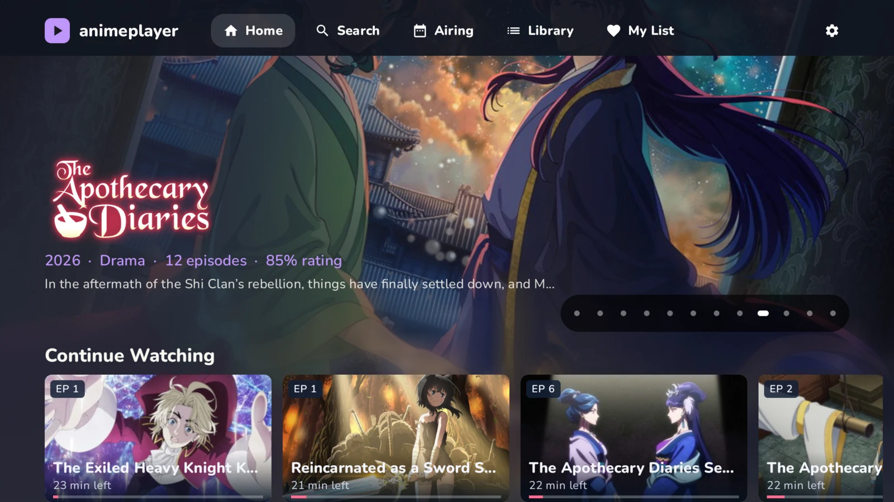
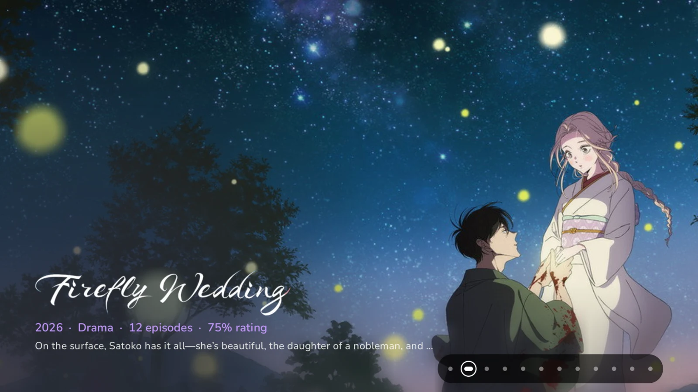
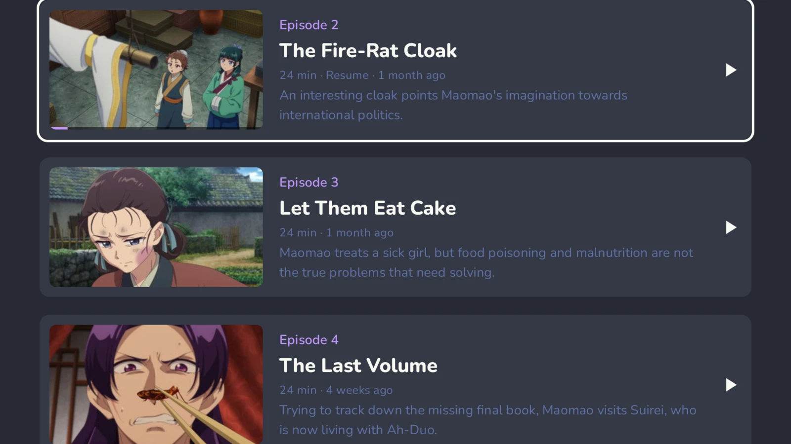
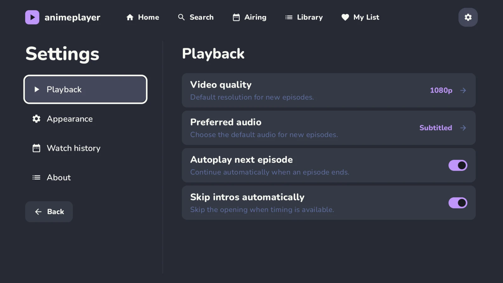

Pick up where you left off.
Continue Watching remembers your progress and shows a still from the episode when one is available. Choose bigger cards in Settings if you sit farther back.
TMDB-enabled build shownAn open-source anime player for Android TV and Google TV. Browse series, pick an episode, and get back to where you left off. All from your remote.


Continue Watching remembers your progress and shows a still from the episode when one is available. Choose bigger cards in Settings if you sit farther back.
TMDB-enabled build shown
Browse linked seasons, read episode summaries, and jump to a range in longer series. The player also has an episode picker so you can switch without leaving playback.
TMDB-enabled build shown
Choose audio and video quality, adjust Home card size, and preview subtitle appearance before starting an episode.
The public APK browses the AniList catalog. Add your own TMDB key under Settings → TMDB to enable the featured carousel with muted trailer previews, logos, and episode artwork.
TMDB setup guide